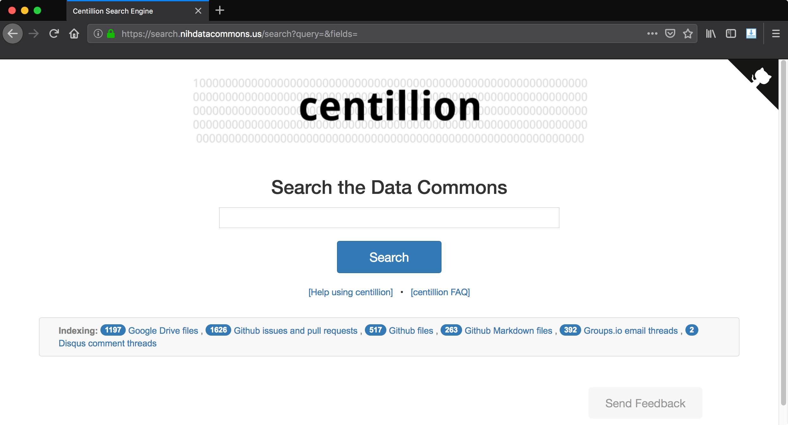

centillion¶


centillion: a document search engine that searches across Github issues, Github pull requests, Github files, Google Drive documents, and Disqus comment threads.
a centillion: a very large number consisting of a 1 with 303 zeros after it.
One centillion is 3.03 log-times better than a googol.

What is centillion¶
centillion is a search engine that can index different kinds of document collections: Google Documents (.docx files), Google Drive files, Github issues, Github files, Github Markdown files, and Disqus comment threads.
How centillion works¶
The backend of centillion defines how documents are obtained and how the search index is constructed. centillion builds and updates the search index by using APIs to get the latest versions of documents, and updates its search index accordingly. (More information)
The centillion frontend provides a web interface for running queries and interfacing with the search index. (More information)
How to configure centillion¶
To get started with centillion, you will need to create
a centillion configuration file. Start with the example
configuration file in the examples/ directory.
Important details to specify include:
- Access control (whether to enable it or not)
- Testing (whether we are testing or not)
- Search index location on disk
- Whether to enable Github, and what to index
- Whether to enable Google Drive, and what to index
- Whether to enable Disqus, and what to index
- API keys for all enabled services
- User interface details
See the Configuring centillion page for more information.
Quickstart¶
This quickstart will get you started with a centillion instance that is populated with fake documents (avoiding the need to make real API calls). This will allow you to try out centillion before you enable any APIs.
Clone:
Start by cloning a copy of the repo:
cd git clone https://github.com/dcppc/centillion cd ~/centillion/
Virtual Environment:
(This step is optional.)
Start by setting up a virtual environment, where centillion will be installed:
virtualenv vp source vp/bin/activate
Install:
To install centillion, first install the required packages:
pip install -r requirements.txt
Now install centillion:
python setup.py build install
Test that your centillion installation went okay:
python -m centillion
If you see no output, that means centillion has been successfully installed.
If you see an error message, check that you have activated your virtual
environment (source vp/bin/activate).
Run:
Crete a temporary working directory:
mkdir -p /tmp/my-centillion-instance && cd /tmp/my-centillion-instance
Now create a minimal centillion instance with the following Python program:
run_centillion.py:
import centillion app = centillion.webapp.get_flask_app(config_file='config.py') app.run()
The config.py file can be copied verbatim from the example
configuration file in the repository:
cp ~/centillion/config/config_centillion.example.py config.py
Now run the centillion instance by running the script:
python run_centillion.py
This will run the webapp on port 5000, so navigate to http://localhost:5000 in the browser.
Populate the Search Index:
To populate the search index, visit the control panel route:
http://localhost:5000/control_panel
From here you can re-index the search engine. The example configuration file uses fake documents instead of real API calls, so the reindexing will work even without a network connection. To return to the index, click the centillion banner.
Visit the Master List:
The master list shows a list of every document indexed by centillion. Visit the master list route:
http://localhost:5000/master_list
Try Searching:
Visit the help page for more information about running searches:
Try searching for the following terms to see search results:
barleymasked figurebananasbacteriamicroscope
Examples¶
To see centillion in action, use the examples provided in the
examples/ directory.
The fakedocs example populates a centillion instance with fake
documents, so you can try out centillion without setting up any
API keys.
There are also examples for setting up centillion instances that index Github repositories or Google Drive folders.
The examples are:
-
Fakedocs example - populate a centillion instance with some fake documents to take centillion for a test drive without setting up any APIs
- Files:
examples/run_centillion_fakedocs.pyconfig/config_centillion_fakedocs.py
-
Google Drive example - populate a centillion instance with Google Drive documents. This requires enabling the Google Drive API and obtaining API credentials. (See APIs page.)
- Files:
examples/run_centillion_gdrive.pyconfig/config_centillion_gdrive.py
-
Github example - populate a centillion instance with files, issues, and pull requests from Github repositories. This requires creating a Github API access token. (See APIs page.)
- Files:
examples/run_centillion_github.pyconfig/config_centillion_github.py
Fakedocs example¶
To run the fakedocs example:
# make sure you have centillion installed: python -m centillion # run the fakedocs example cd examples/ && python run_centillion_fakedocs.py
The centillion instance will be available on port 5000. If you are running in a local machine, access centillion by going to http://localhost:5000 in a browser.
(This is identical to the quickstart above.)
Github and Google Drive examples¶
To run the Github or Google Drive examples, start by setting up the respective API (see instructions on the APIs page).
Next, modify the configuration file and
paste your Github API credentials or point
to the path of your Google Drive credentials.json
file.
Now you can run the Github or Google Drive examples:
# make sure you have centillion installed: python -m centillion cd examples/ # run the github example python run_centillion_gh.py # run the Google Drive example python run_centillion_gdocs.py
Submodules¶
See the Submodules of centillion page for details about how centillion is organized into submodules.
The search functionality is implemented in centillion's
backend search submodule. This uses the
Whoosh library in Python.
The web interface is implemented in centillion's
frontend webapp submodule. This implements
a web interface for centillion using the Flask library in
Python.
To restrict access to centillion, we implement an OAuth application that verifies users are members of a particular Github organization. See Github authentication layer for details.
APIs¶
See the APIs page for an overview of the third-party APIs that centillion interfaces with to populate the search index.